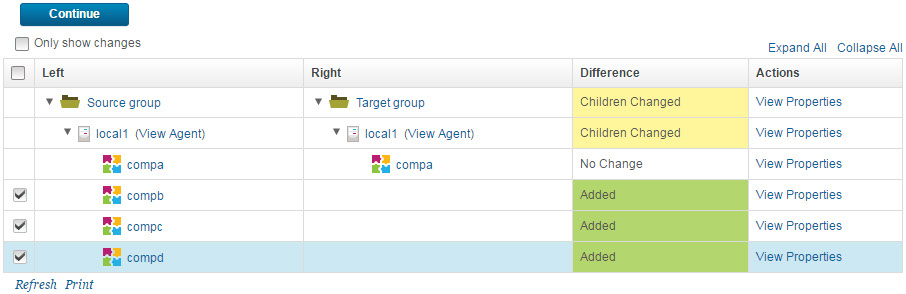
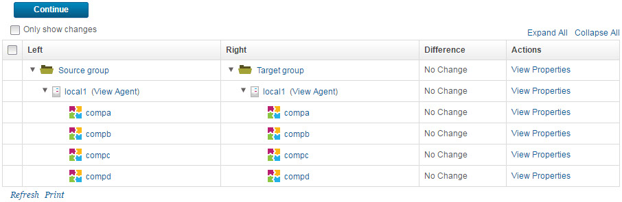

You can compare the contents of a resource group to another group or a resource template
and then apply changes to the group or template.
About this task
You can compare a group in the resource tree to another group or a resource template. You
can apply changes, including properties and their values, from the first group that you select to
the resource tree or second group.
Procedure
-
Open the Resource Tree page.
In addition to the Resource Tree page, resources might be displayed in
several ways, such as by adding resources to an environment.
-
Display the Action menu for the folder that contains the source group
and click Compare or Synchronize.
-
Compare the contents of a resource to either a resource template or another resource.
- To compare the contents of the resource to the contents of a resource template, take the
following actions:
- From the Compare Resources window, select Compare With Resource
Template.
- From the Resource Template list, select the name of the target resource
template.
- Click Save.
- To compare the contents of the resource to the contents of another resource, take the
following actions:
- From the Compare Resources window, select Compare With
Resource.
- From the Compare Resources list, click Set.
- From the Select Resource window, select the target resource. You can expand
resources and select a nested resource for the comparison.
- Click OK.
- Click Save.
-
On the Resource Comparison page, expand both resource trees.
-
Clear Only show changes.
-
Select each different resource from the left-hand, or source, resource to apply to the
right-hand, or target, resource.
The differences between the two resource trees are displayed. Each line of the resource tree
can be one of the following states: Children Changed,
Added, Deleted, or No Change.
For example, the following image shows that the source resource tree contains three more
agents than the target resource tree. All three additional agents will be added to the
right-hand, or target, resource tree.

-
To review your changes, click Continue.
The changes to the right-hand resource tree are displayed in the Preview
Changes window.
-
Click Apply Changes.
An Alert window confirms that the resource changes were applied
successfully.
-
Click Close.
The
Resource Comparison page displays the updated status of the
right-hand resource tree, as shown in the following image.

Since the contents of the groups are now identical, the statuses in the
Difference column are all
No
Change.